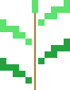

Sprig LinuxA small Linux for PCs with little memory: Linux 7.3, BusyBox and a few dozen programs in 18 MB of RAM. Here it runs on tiny386, a Pentium-class PC emulator compiled to WebAssembly. Nothing to install.
Downloads 14 MB, then starts in a few seconds.
Type menu to see the programs
Click the screen to use the mouse; Esc gives it back
Tap the screen to type
poweroff switches off
menu all programs in a listmc Midnight Commanderzork1 the text adventurebasic Bywater BASICcmatrix digital rainhtop what's runningNothing is saved. Reloading the page starts a fresh machine.
No internet here: a browser page can't open network connections for it.
On a phone, tap the screen to type; the keys under it add Esc, Ctrl, the arrows and F1–F10. Ctrl and Alt apply to the next key.
Sprig Linux is made for Tab5 PC, the emulated PC on the M5Stack Tab5, and boots in tiny386 elsewhere too.